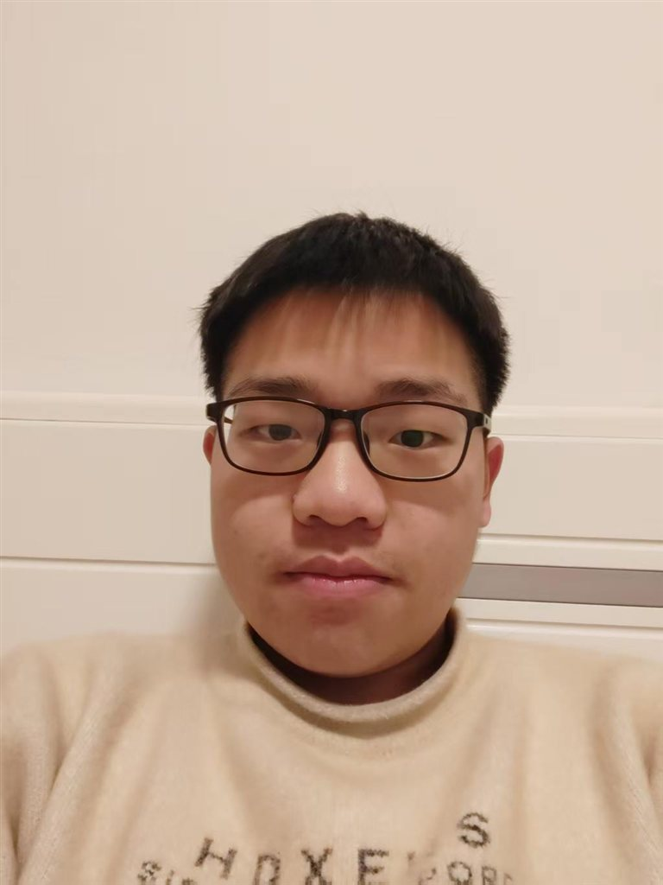

01 · 性格↗
有想法，也有表达欲。
平时安静。遇到真诚、有自驱力的人，就很愿意聊。
再认识一点 ＋
我很容易交往，也偶尔会有点跳脱、反应慢半拍。喜欢认真交流，也允许自己有可爱的一面。

02 / ABOUT ME
第一眼的安静，不代表没有话想说。
点一个词，让认识从这里开始。
平时安静。遇到真诚、有自驱力的人，就很愿意聊。
我很容易交往，也偶尔会有点跳脱、反应慢半拍。喜欢认真交流，也允许自己有可爱的一面。
喜欢哲学与沉思，也在学习 AI 编程，探索想法的可能。
敢于挑战自己，迈出第一步，再不断进步。交朋友，也是这个过程中自然而然的事。
不看颜值。不论状态高低，愿意倾听，也愿意一起承担。
互相认定是真心好友，就一起面对困难。有开心、困惑或新鲜事，都可以来找我聊。
03 / THINGS I LOVE
点一张小卡片，找到我们共同的话题。
音乐是我的大兴趣。也想练好嗓子，把喜欢唱给你听。
SELECTED WORK / 作品集
一段 AI 视频，四幅风景。点击，走进画面。
PROJECT 01 / AI VIDEO
用天空、倒影与光影，呈现一段温柔的表达。
点击图片，查看完整画面。
04 / NEXT STEPS
四件正在努力的事。不急着定义自己，先往前走。
把脑海里的想法，做出来。
BUILD WHAT I IMAGINE ↗唱喜欢的歌，尽情表达自己。
FIND MY OWN VOICE ↗背单词，争取一次过四六级。
OPEN ANOTHER WINDOW ↗健康每一天，争取一学期瘦 10 斤。
STRONGER DAY BY DAY ↗这是我想奔赴的方向。
先做几年 AI 项目开发，积累经验与资金。
进入光电企业或创业，探索光屏、全息投影与生活产品。
畅想认知芯片，探索科技与认知能力的连接。
火箭、新能源、全球互联——对未来，保留想象。
05 / WHAT I CAN OFFER · 我能提供的价值
能为你带来的，先从这三件小事开始。
开心可以分享，低谷也可以倾诉。努力做你的心灵挚友。
聊新鲜事、聊生活困惑。在力所能及的范围里，帮你想办法。
分享 AI 开发经验，交流 AI 游戏、图片与视频创作。
写给自己的话每日一遍，
保持独立思考，追寻自我，守住信念。
理想不灭。
06 / LET'S CONNECT
音乐、历史、AI，或者只是想聊聊。
期待认识真诚的你。